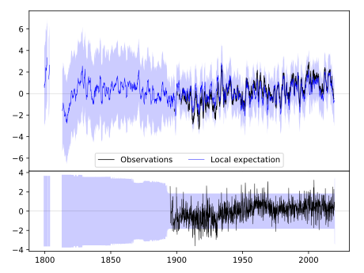
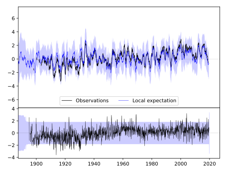
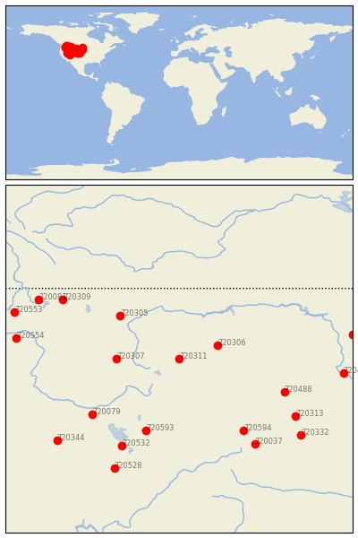

RED LODGE [USA]


| Neighbour | Name | Country | Distance | Lon/Lat | Years |
|---|
| 720311 | RED LODGE | USA | 0 | -109.2, 45.2 | 1895-2019 |
| 720306 | HYSHAM 25 SSE | USA | 181 | -107.1, 45.9 | 1892-2019 |
| 720307 | DILLON WMCE | USA | 266 | -112.6, 45.2 | 1893-2019 |
| 720305 | AUGUSTA | USA | 354 | -112.4, 47.5 | 1893-2019 |
| 720593 | EVANSTON 1 E | USA | 457 | -111.0, 41.3 | 1889-2019 |
| 720488 | HOT SPRINGS | USA | 495 | -103.5, 43.4 | 1893-2019 |
| 720079 | OAKLEY | USA | 503 | -113.9, 42.2 | 1893-2019 |
| 720594 | LARAMIE RGNL AP | USA | 517 | -105.7, 41.3 | 1866-2019 |
| 720532 | TOOELE | USA | 580 | -112.3, 40.5 | 1895-2019 |
| 720309 | LIBBY 1 NE RS | USA | 596 | -115.5, 48.4 | 1893-2019 |
| 720037 | FT COLLINS | USA | 610 | -105.1, 40.6 | 1873-2019 |
| 720313 | ALLIANCE 1WNW | USA | 612 | -102.9, 42.1 | 1889-2019 |
| 720081 | PRIEST RIVER EXP STN | USA | 678 | -116.8, 48.4 | 1893-2019 |
| 720554 | DAYTON 1 WSW | USA | 693 | -118.0, 46.3 | 1891-2019 |
| 720332 | LODGEPOLE | USA | 702 | -102.6, 41.1 | 1893-2019 |
| 720492 | PIERRE RGNL AP | USA | 707 | -100.3, 44.4 | 1866-2019 |
| 720528 | DESERET | USA | 716 | -112.7, 39.3 | 1891-2019 |
| 720344 | ELKO RGNL AP | USA | 725 | -115.8, 40.8 | 1888-2019 |
| 720553 | DAVENPORT | USA | 735 | -118.1, 47.7 | 1892-2019 |
| 720411 | NAPOLEON | USA | 741 | -99.8, 46.5 | 1889-2019 |